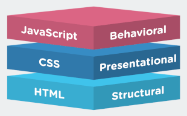

The history of JavaScript is fascinating and to understand it we need to rewind the clock back almost 40
years.
Figure 1 - Brendan Eich, inventor of JavaScript.
1989: British Scientist Tim-Berners-Lee invented the world-wide-web (www).
Early 1990's: The www began gaining popularity and there was fierce
competition between the main tech
companies to capture market share (Microsoft, Netscape, Sun Microsystems - now Oracle). Websites
were
static and users had little opportunities for interaction.
1995 August: Internet Explorer 1.0 is released by Microsoft
1995 September: Brendan Eich (Fig 1) creates JavaScript and releases it with
Netscape
Navigator 2.0 web browser.
This profound invention changed the web experience forever. Javascript allowed websites to
become more interesting, interactive and dynamic.
1995 November: Microsoft reverse engineers JavaScript and develops JScript
which is released on Internet
Explorer 2.0.
1996: JavaScript is taken to the ECMA international standards organization
where a committee TC39 is
formed to oversee and develop the language. This is hoped to improve cross browser compatibility, assist
developers and give users a seamless browsing experience. ECMAScript is the official name of the
language.
1997: ECMA-262 Edition 1 is released.
Early 2000's: Tech companies are still participating in the Browser Wars to
gain market share and
co-operation is fragmented when developing a standardised language.
Late 2000's: JavaScript gains the attention of open source communities and
many open source developments
are released with JavaScript as the backbone. (jQuery, Prototype, Dojo Toolkid)
2008: Large tech players hold a conference and agree to co-operate efforts in
progressing the language.
2009: ECMAScript 5 standard is released.
2023: ECMA-262 Edition 14 is released and is the latest version. Click here
to view the ECMA-262 editions
What does Javascript do?

Figure 2 - standard web technologies.
JavaScript, often referred to as JS for short is a scripting or programming language used primarily in
the development
of Websites and Webpages. Javascript is supported by many frameworks and is extremely versatile
whether being used for frontend, backend, web applications and even apps.
Unlike HTML which is the structural backbone of web development, CSS which is predominantly styling and
layout or design, JavaScript creates dynamically updating and interactive websites (Fig 2). These
include
multimedia aspects like moving images, video, interactive buttons and sounds. A website without Javascript
will quite a dull one indeed!
You can look at it like any other
high-level (Human readable) machine language, for example, C++.
It is Layer 3 Of the layer cake of standard web technologies, The first of which being HTML and the second
CSS.
Current state of Javascript
The power and versatility of JavaScript in both front and backend development means it is the most popular
programming language in the world (Trienpont International). Statistics obtained from various sources show:
67.8% Of developers were using it in 2019.
It is used to build 95.2% (1.52 Billion) Websites today.
According to w3techs, JavaScript is used as client-side programming language by 98.9% of all the
websites.
For over 7 years in a row, JS has been ranked the most commonly used programming language.
According to GitHub's 2018 Octoverse Report; There are more JavaScript code repositories than any other
language (with the number steadily rising)
Some of the biggest sites we know such as YouTube & Facebook utilise Javascript.
Virtually all web browsers support JavaScript
Since NetScape handed JavaScript over to the ECMA in 1996, JavaScript has been overseen and developed by
committee TC39. The JavaScript specification manual is now developed on GitHub with the help of the
community. Users can contribute by submitting requests and reporting issues. These are then reviewed by the
committee and decisions are made.
Future trends
Since it's inception in 1995 where it revolutionised the web browsing experience, JS has solidified its
status as a crucial component of the web browser and other applications.
The many updates to JS means that standalone JavaScript is rarely used these days - its power comes from
combining it with multiple frameworks and technologies to run complex applications. Popular
frameworks include react.js, angular.js and node.js.
Due to it's widespread usage, deeprooted connection to web browsers, expansive range of frameworks and open
source community, JS remains versatile and adaptable to changing trends and requirements.
The future of JS looks promising and the language will not die out anytime soon.
Now, even with the rise in AI, JavaScript still remains highly relevant as users use the web to communicate
with these interfaces - and as the web is dominated by JavaScript it will continue to be used.
Related technologies
In website building, the three core development languages are HTML, CSS and Javascript. It is almost
impossible to find a website that does not utilise all three of these technologies - they are all inexorably
linked.
The table below compares some key features between the three.
3 Core standard web development programming languages
HTML
CSS
JS
Stands for
Hypertext Markup Language
Cascading Style Sheet
JavaScript
Creation Date
1990
1996
1995
File extension
.html
.css
.js
Function
Defines the structure and content of a website
Styles the appearance and layout of the HTML
Implements interactivity and functionality into a web page